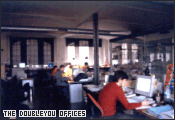
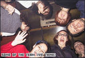

Thirteenth Parallel /archive/doubleyou/
13th Parallel’s Sergi meets Daniel Solana and Joakim Borgström from DoubleYou in their Barcelona office on 30 January 2002.
Back in December 2001 I was having a holiday with my girlfriend in Amsterdam and met with Michaël. We had great fun and talked for hours. He talked about a Scott Andrew's profile for 13thparallel and I thought I could contribute with an interview with the DoubleYou directors. After all, they have offices in Barcelona and I live there too. We both agreed in that it would be a thrilling experience.
And it certainly was. DoubleYou has always been my main reference for original and interactive DHTML websites. Their cool approach to both the Audi TT Coupe and Audi TT Roadster makes me drool every time I surf them. The amazing techniques applied on the Zara site earned them full recognition among DHTML developers around the globe. Now they work more with Flash, but still bring awesome interactivity to their websites. My intention with this interview was to get to know my idols in person and bring them closer to people outside Spain.
So I made contact with them and asked if they would allow me to interview them for the February issue of Thirteenth Parallel. We'd talk about DoubleYou as a company, their creations, DHTML and flash, and the future of the web. Daniel Solana, Creative and Project Director, answered they'd be very happy to do it and we finally met on Wednesday 30th January 2002.
I was really excited about it. I got there around 4pm, and instantly fell in love with the atmosphere. Their offices are in the centre of a traditional district in Barcelona, Gràcia. It's a massive flat inside an old, restored factory, full of free space, computers and awards.
Daniel Solana introduced himself and Joakim Borgström, Interactive Director, and we started to talk. They asked about Thirteenth Parallel and its aims, they were really interested. But the interesting part, for me, was about to come.
We were talking for an hour. We had prepared lots of questions to ask them, but they all seemed to appear as the conversation flowed. Most of the time Daniel or Joakim started talking about the subjects without my prompting, and this made the interview less rigid, much more flexible and attractive. What follows is a transcription of it all. I enjoyed the experience a lot, and hope you will too.
What does DoubleYou do and how do you see its role?
DS: “I see the Internet as a platform for communication that allows for many different approaches. Since the standards aren’t very well defined and people come from different fields we need to mark out what advertising is with respect to the Internet, what a newspaper is, etcetera etcetera. There is also confusion among the people who work on websites and interactive projects.
“We are basically an advertising agency that undertakes projects on the Internet. We start with a marketing point of view and translate that in to a web based communication. But it also happens that as web professionals we have been involved in projects that are purely advertising.
“However, our company definition is that we use Internet to do advertising, although it is not advertising in the conventional sense. We try to develop products such that it uses the Internet’s full potential. Advertising has experienced an evolution, going from strictly informative to emotional.”
How did you come up with the name “DoubleYou”?
DS: “www became w ... the letter.”
How do you produce large projects? How long does it take to create a site like that? How do you work between different teams (design, programming...)?
DS: “Time depends a lot on the individual project; some are very easy and fast to produce while others last months. I think in this respect we reinvent the production process based on the project’s characteristics. We improvise because we don’t come from one particular business sector.
“The company structure is basically an advertising agency with a creative department and an account department (production management and talking to the client). We then have a technological creativity department, lead by Joakim, that focuses on communication through software, and then a pure technological department with engineers and IT professionals who give support and ideas regarding the most technical aspects of a project.
“The process is profoundly dependent on the individual project. For big projects we first need to develop a design strategy, this means the various people involved can coordinate their work effectively and everyone stays happy.
“The Internet is growing in regard to the communication possibilities, what we were once able to do with one programmer and one designer now requires lots of people, and they need to be much more specialised. This implies a much more sophisticated production strategy. We may need a programmer, two designers, a Flash specialist, a video specialist, someone to determine the navigational structure (the usability), and other specialists, if we want to produce a high-quality product. Therefore, the development process grows in complexity.
“There are still some freelancers that do everything, but for big projects it has become too complex for just one person to manage.”
What piece of work are you most proud of?
JB: “Honestly, I’ve never thought about it. I wouldn’t be able to make any one piece stand out above others.”
DS: “It’s not an issue of pride but work that was most recognised. That doesn’t necessarily correspond to the work that we like the most. I can’t emphasize one particular project either.
“What we try to do is bring something new to each project. That is what I feel proud of!
“Sometimes small changes to the development process allow us to optimise it, raise hypotheses that improve the quality. The Internet is a very complex field, and we are few and still inexpert, we face a medium with many possibilities and few economic resources, especially compared to TV.”
Maybe two years ago there was more of an economical resource, what with the Internet boom, at least here in Spain?
JB: “Some years ago there were much less people working with the web and it was easier to stand out. Now you need to do something really innovative to force a reaction. We need to trace a path and investigate, which is difficult, but there are many things that are left to be done. We must be pioneers!
“At the beginning we bet on JavaScript. It was something quite complex (talking about cross browser compatibility) and had many problems that were gradually solved. We stood up for the use of layers and animations without the use of Flash. But then, web based animation was in its early stages. Now with Flash 5 we can program too.”
Why did you start using DHTML way before it was mainstream? What did your clients think of this? Was there any risk involved?
DS: “I remember very well the day Joakim came and told me: ‘I’ve just found a wonderful thing’. It was JavaScript.”
JB: “There was this guy called Dan Steinman. At that time I only had Macintosh with Netscape 4.0. Can you imagine it? We were already flipping out. We were about to bring out the Seat Ibiza website, but were having some delays. So, we used the extra time to make a section of the site spicier. We did it in DHTML.”
DS: “At that time in Spain (and many other places around the world) JavaScript was something absolutely unknown.”
JB: “And the fact of using the libraries from Steinman (dynapi 1.0) brought us the doubt about whether to sign with his name or not, because clients would look at the source code and maybe we wouldn’t go further. But we’ve always used the credits and that was one of the reasons dynduo became so popular in Spain.”
DS: “We used dynapi on three or four projects; we became good at it and discovered new possibilities.”
JB: “We learned a knack for programming for the differences between browsers. I think that the first completely interactive website we made was that of Audi TT Coupe.”
DS: “I think JavaScript was introduced in Spain by Joakim, it was like a chain reaction. Three or four projects got attention and then we discovered the possibilities of DHTML.”
At that time you had a problem with Macromedia. One of their managers in Europe thought you were using Flash without licence, and in fact it was all DHTML, but you still hadn’t used Flash at this point.
DS: “That story became known a long time after it actually happened, when we were already using Flash. A manager in Macromedia wrote to us saying that we didn’t have licence and were not allowed to use Flash. I replied saying that I would forward the email to specialised forums, which I didn’t do. Two years later someone from DoubleYou sent the emails somewhere and those started to spread. I want to make clear the diffusion of the emails was later than we started using Flash. It’s nothing but an anecdote.
“Maybe due to that email we were seen as anti-Flash, which we weren’t. Flash was used without interactivity, without programming, and we didn’t like that trend. It implied a passive use of Internet, and we wanted something interactive. When Flash 4 came out, which can be programmed, we started using it.”
JB: “The Audi A2 website, two years old now, was programmed in Flash. Now we are using our own Flash libraries, flashAPI, which are public. It’s a similar to dynapi 2 from Steinman but done in Flash. It allows us to easily translate what we know how to achieve using JavaScript to Flash. All the libraries that we used to make cool effects now have Flash equivalents. So far it’s been available for a month and we got lots of links already.”
So, have you definitely withdrawn from using DHTML?
JB: “I don’t think so... No not at all. Some months ago, 90% of the projects we were doing were in Flash. Now we’ve done one in DHTML. We’re making up our minds to do things with JavaScript for campaigns, stuff with banners and so on. And if we can (and we want to) forget about Netscape now we may discover a new path to follow. We are studying the possibility of using only Explorer.”
So you will start using DHTML again as you stop implementing for Netscape, won’t you?
JB: “Actually, our last work (release date february 2002) from Nestle is done with JavaScript using dynapi 2 (compatible with Netscape 4.7, Netscape 6, and all the current browsers) and we combine transparency effects and fades (in explorer, of course, in Netscape just show/hide). Some programming will always be done.”
How do you see DHTML in the future? Only Netscape 6? What do you think about W3C specifications?
JB: “For me Netscape can leave existence.”
You mean Netscape 4?
JB: “Netscape 6 too. I know it leads to monopoly but we can then develop for only one product, what we currently do with Flash, no? In Flash, no matter what browser nor platform, it works under Linux, Windows, Macintosh, Netscape, Opera, etcetera. Statistically we see that Netscape users are decreasing a lot.”
DS: “It makes budgets more expensive producing a work that is visible for everyone. We are suffering from it and so are our clients. Instead of concentrating on doing something better you have to do something universal, and that doesn’t benefit us at all. Although one may be ethically against any kind of monopoly, we need a standard to be able to adjust our budgets.”
JB: “I’m not at all for Microsoft, but now it’s much easier to program for Explorer. If Netscape 6 was better, we’d go ahead, and programme for Netscape 6 as well.”

Well, it’s much slower. It’s based on a beta in fact; maybe they should’ve waited.
JB: “Let’s see how things go with Netscape 7. For instance, I’m not sure what will happen to Flash, because Explorer now comes with many features for vector based programming, it allows you to do a lot of things without a plug-in.
Then, how do you see vector graphics? Not only Flash but SVG and and VML.
JB: “Adobe’s one? We haven’t used it. So far it’s a plug-in. We’ve tested it but not applied it yet.”
You don’t think it will represent tough competition to Flash?
JB: “I believe that the development of Flash 6 or 7 will be more similar to Shockwave, and that Shockwave will disappear. Shockwave is much better than Flash, but doesn’t have that many features for vector animation.”
Do clients give you absolute freedom over the product or do they have a clear idea of what they want for the design and message?
DS: “A bit of everything. But what is usual, and most desirable for us, is that the client defines the path: what they want to achieve with the project, if they want to present a certain brand image, who the audience is, etc. In theory we should develop the strategy and contents of the website depending on the client’s objectives, with enough freedom to find different ways of doing so. And it usually works this way.
“There are clients that come without a clear idea of what they want and other clients come with a clearer company idea. We work out, in both cases, an agreement with the client to build a structure that achieves those objectives and maybe highlight others that they hadn’t thought of. And we can bring something new, as we know the format of this medium.
“The clients see it from distance and only have the websites they’ve seen in mind. Our contribution is to determine what kind of communication format to build in order to achieve those determined sensations and perceptions. That approach gets linked to the brand’s philosophy, which the client usually knows very well. In this field we need a bit of freedom, and we seldom have any problems. Compared to conventional advertising, which is much more difficult, we have the advantage that if we are given enough data, we know who exactly we are targeting, what we intend to convey, if we have everything clearly defined, then we can work without any troubles.”
As designers, are there any artistic movements that inspire your work?
DS: “Everything inspires us... and that’s good! Even though we have a calling for being innovative and finding new paths, we have to translate the brand’s image to the Internet. We aren’t experimental at all. I don’t think we have ever done a purely experimental piece of work, maybe we’d like to, but we haven’t had the chance. We have to follow the values and personality of the brand, which influences the design that we then translate to the Internet. We are in the marketing race - we don’t experiment!
Joakim was talking about the SVG plug-in earlier. We are conscious that there is a chance to experiment and innovate with standards, but one thing we’ve never done is look for weird plug-ins that bring a special value to only a minority of viewers. We need to concentrate on the big audience!
“In theory (as it is not always that easy) we should be influenced by the brand itself. It is not the same working for Audi as for Nestle; one is innovative while the other one is conservative. And that’s what the work has to transmit, if we achieve this we will have made a good job of the design. But there are certainly some trends. For instance, at the advertising level, the graphics department has always been very innovative in design, continuously experimenting, and we feed from design and international communication from books and spots, and of course the Internet is an endless source of stimuli.”

How do you see the future of the Internet? What do you see as the main factors that will influence the growth of the Internet in the next 5-10 years, i.e. webTV, mobile phones, etc? How will this affect you?
JB: “We can now have a computer or even a laptop with a wireless connection. We’ll also have interactive PDA’s soon and will have the opportunity to program for PDA’s or 3rd generation mobile phones. I don’t know what advertising means there, maybe a banner?”
DS: “I remember that I used to think more about the future than I do now. When it all started my mind was set one year ahead. In all this time I’ve learnt (or I’ve degenerated to) not to look too much to the future. There was a time the revolution was going to be push technology, then e-commerce. We’ve seen many booms pass by, and some of them have settled, but the future is so unforeseeable that I can’t be worried about it too much.
“I am worried about how a website will be accessible in six months time from its launch. That’s the important point. My vision about the future of the Internet... we can theorize, can’t we? We can’t theorize too much though.
“It will affect us, that’s for sure! I’m not saying that out of disinterest but from pragmatism. Maybe we’re not ready to imagine how the medium will be. The speed of this change depends on many factors (i.e. marketing or economical) that are unforeseeable.”
JB: “As for the future, I’m worried about how the way we interact with the web will change. At the moment we only have a mouse; right button, left, click, mousedown, etcetera. It’s very hand orientated, but I cannot predict how this will be in the future. Will it be voice orientated? It’s a very interesting path to investigate. And it will definitely affect us.”
DS: “I think we tend to do communication more audio-visually, and in our field this can affect interactivity. We are communicators; we’ve done magazines, radio, television, and now we have a digital tool that provides interactivity: a dialogue between a system with movements and sounds and a user that interacts with all of them. If that is through a computer it will be with a mouse, through a TV with the remote control, through a cell phone with small screen and keyboards, etcetera. But those are nothing but the tools for something more basic which is navigation, with some technological factors effecting it such as size, speed, multimedia capabilities, etcetera. We should be able to do the same in all formats.”
In any case, the medium can change a lot but DoubleYou’s role on the Internet will always be the same, in the producing trendy sites and innovating.
DS: “Yes, but we must keep in mind the main objective, which is communication with the user, in the same way that communication exists in TV, cinema or a simple photography. We give the senses a lot of importance compared to other companies. That is what makes you go watch a movie and get dazed. That’s amazing! The Internet will achieve that someday, but not yet. And we should be there. And the tool we have is interactivity, complicity with the user.”
I think you’ve achieved that, the user has to interact to browse through the website, they have to participate.
DS: “Yes, but the medium is still too poor, we have sound, but not Dolby Surround from cinema, that shakes you. We’re still too limited.”
That subject comes in handy. How do you see, at least in Spain, the arrival of broadband? Will it finally get here? Cause it’s arriving, but very slowly.
JB: “I’ve recently read in El pais that there are 250,000 users with ADSL or broadband in Spain. That means 10% more or less, that’s quite a lot.”
But I mean to do a project like the ones you’re talking about you need more Mbps.
JB: “At least 2 Mbps.”
DS: “I don’t know when, but it will get here someday. With the Internet II...”
Thank you very much indeed for your time. It’s been a great learning experience.